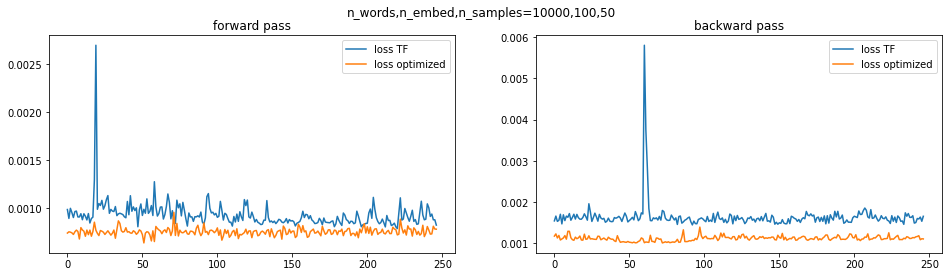
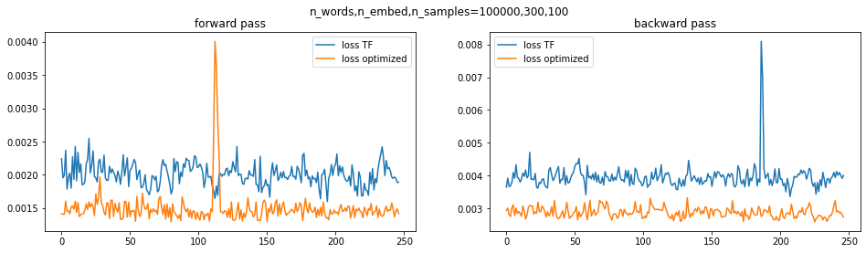

Efficient Sampled Softmax#
This code simplifies and optimizes the default TF sampled softmax loss. The speedup in training can be by a factor of 2 for NLP tasks.
%tensorflow_version 1.x
import tensorflow as tf
def sampled_softmax_loss(target_embed_kernel,labels,inputs_embed,
samples,labels_prior,samples_prior,
raw_inputs=None,embed_kernel_shapes=None):
'''
computes sampled softmax loss, more efficient than TF implementation
inputs:
- class embeddings [N_BATCH,N_EMBED]
- true labels
true classes [N_BATCH]
- embeded inputs
inputs after forward activation [N_BATCH,N_EMBED]
- sampled candidates with sampling priors
triple (samples,labels_prior,samples_prior) as computed by candidate sampler from tf)
- [optional] raw inputs and gradient shapes needed optimized backpropagation
outputs:
- loss, scalar - mean over batch!
- [optional] gradients for embeddings in sparse form!, when inputs and shapes passed
'''
with tf.variable_scope('sampled_softmax'):
with tf.variable_scope('target_embeddings'):
samples_embed = tf.gather(target_embed_kernel,samples) # (N_SAMPLED,N_EMBED)
labels_embed = tf.gather(target_embed_kernel,labels,axis=0) # (N_BATCH,N_EMBED)
with tf.variable_scope('labels_logits'):
labels_logits = tf.matmul(tf.expand_dims(labels_embed,1),tf.expand_dims(inputs_embed,-1)) # (N_BATCH,1,1)
labels_logits = tf.squeeze(labels_logits,-1) # N_BATCH,1
labels_logits = labels_logits-tf.log(labels_prior) # add prior-correction
with tf.variable_scope('sampl_logits'):
samples_logits = tf.matmul(inputs_embed,samples_embed,transpose_b=True) # (N_BATCH,N_SAMPLED)
samples_logits = samples_logits-tf.log(samples_prior) # add prior-correction
with tf.variable_scope('sampl_loss'):
candidate_logits = tf.concat([samples_logits,labels_logits],axis=-1) # (N_BATCH,N_SAMPLED+1)
Z = tf.reduce_logsumexp(candidate_logits,axis=-1,keepdims=True) # (N_BATCH,1)
loss = tf.reduce_mean(-labels_logits+Z)
if not embed_kernel_shapes:
return loss
else:
with tf.variable_scope('backprop'):
# note: gradients computed as sparse slices (tf.IndexedSlice), indices may duplicate
grad_input_embed_shape,grad_target_embed_shape = embed_kernel_shapes
batch_len = tf.cast(tf.shape(labels)[0],tf.float32)
samples_pred = tf.exp(samples_logits-Z)/batch_len # (N_BATCH,N_SAMPLED)
samples_mass = tf.reduce_sum(samples_pred,axis=-1,keepdims=True) # (N_BATCH,1)
with tf.variable_scope('grad_input_embed'):
grad_input_embed = tf.matmul(samples_pred,samples_embed) # (N_BATCH,N_EMBED)
grad_input_embed = grad_input_embed - samples_mass * labels_embed
grad_input_embed = tf.IndexedSlices(grad_input_embed, raw_inputs, grad_input_embed_shape)
with tf.variable_scope('grad_target_embed'):
grad_target_embed1 = tf.matmul(samples_pred,inputs_embed,transpose_a=True) # (N_SAMPLED,N_EMBED)
grad_target_embed2 = -samples_mass * inputs_embed # (N_BATCH,N_EMBED)
grad_target_embed = tf.concat([grad_target_embed1,grad_target_embed2],0) # (N_BATCH+N_SAMPLED,N_EMBED)
grad_target_embed = tf.IndexedSlices(grad_target_embed, tf.concat([samples,labels],0), grad_target_embed_shape)
return loss,grad_input_embed,grad_target_embed
Test correctness#
We tests loss and backpropagation on random data several times.
tf.reset_default_graph()
import numpy as np
## random data to check correctness, synthetic word2vec problem
def build_learn_task(N_WORDS,N_EMBED,N_SAMPLED):
inputs = tf.placeholder(tf.int64,[None])
labels = tf.placeholder(tf.int64,[None])
input_embed_kernel = tf.Variable(tf.random.normal([N_WORDS,N_EMBED],0,1),dtype=tf.float32)
target_embed_kernel = tf.Variable(tf.random.normal([N_WORDS,N_EMBED],0,1),dtype=tf.float32)
target_embed_bias = tf.zeros(N_WORDS)
inputs_embed = tf.gather(input_embed_kernel,inputs) # (N_BATCH,N_EMBED)
samples,labels_prior,samples_prior = tf.random.uniform_candidate_sampler(tf.expand_dims(inputs,-1),1,N_SAMPLED,False,N_WORDS)
## our optimized loss
loss,grad_input,grad_target = sampled_softmax_loss(target_embed_kernel,
labels,inputs_embed,
samples,labels_prior,samples_prior,
inputs,
[tf.shape(input_embed_kernel),tf.shape(target_embed_kernel)])
grads = [grad_input,grad_target]
## tensorflow loss - note it is not reduced accross batch
loss_tf = tf.nn.sampled_softmax_loss(target_embed_kernel,target_embed_bias,
labels,inputs_embed,
N_SAMPLED,N_WORDS,1,
(samples,labels_prior,samples_prior),
False)
loss_tf = tf.reduce_mean(loss_tf)
grads_auto = tf.gradients(loss,[input_embed_kernel,target_embed_kernel])
grads_tf = tf.gradients(loss_tf,[input_embed_kernel,target_embed_kernel])
return inputs,labels,loss,loss_tf,grads,grads_auto,grads_tf
N_WORDS = 100000
N_EMBED = 300
N_SAMPLED = 100
N_BATCH = 32
inputs,labels,loss,loss_tf,grads,grads_auto,grads_tf = build_learn_task(N_WORDS,N_EMBED,N_SAMPLED)
init_randomness = tf.global_variables_initializer()
with tf.Session() as sess:
for _ in range(3):
# refresh randomness every time
sess.run(init_randomness)
inputs_batch,labels_batch = np.random.randint(0,10,[2,N_BATCH],np.int64)
feed_dict = {inputs:inputs_batch,labels:labels_batch}
# compute both losses and compare
loss1,loss2 = sess.run([loss_tf,loss],feed_dict)
np.testing.assert_array_almost_equal(loss1,loss2,5)
# compute gradients and compare
grad1,grad2,grad1_auto,grad2_auto = sess.run(grads+grads_auto,feed_dict)
for i in range(3):
np.testing.assert_array_almost_equal(grad1[i],grad1_auto[i],5)
np.testing.assert_array_almost_equal(grad2[i],grad2_auto[i],5)
Compare speed#
We evaluate speed of both implementations for forward and backward passes. Time is in seconds.
import time
from matplotlib import pyplot as plt
N_BATCH = 256
N_LOOPS = 250
train_data = np.random.randint(0,10,[N_LOOPS,2,N_BATCH],np.int64)
def get_timings(op,train_data,init_op):
''' does timings for a graph op several times '''
with tf.Session() as sess:
sess.run(init_op)
times = []
for inputs_batch,labels_batch in train_data:
feed_dict = {inputs:inputs_batch,labels:labels_batch}
time_start = time.time()
sess.run(op,feed_dict)
time_end = time.time()
times.append(time_end-time_start)
return np.array(times)
for N_WORDS,N_EMBED,N_SAMPLED in [[10000,100,50],[100000,300,100]]:
## build task
tf.reset_default_graph()
inputs,labels,loss,loss_tf,grads,grads_auto,grads_tf = build_learn_task(N_WORDS,N_EMBED,N_SAMPLED)
init_op = tf.global_variables_initializer()
## prepare plots
_,axs=plt.subplots(1,2,figsize=(16,4))
## evaluate forwad pass
for op,label in zip([loss_tf,loss],['loss TF','loss optimized']):
timings = get_timings(op,train_data,init_op)
axs[0].plot(timings[3:],label=label)
axs[0].legend()
axs[0].set_title('forward pass')
## evaluate backward pass
for op,label in zip([grads_tf,grads],['loss TF','loss optimized']):
timings = get_timings(op,train_data,init_op)
axs[1].plot(timings[3:],label=label)
axs[1].legend()
axs[1].set_title('backward pass')
plt.suptitle('n_words,n_embed,n_samples=%s,%s,%s'%(N_WORDS,N_EMBED,N_SAMPLED))
plt.show()

